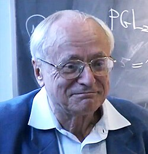
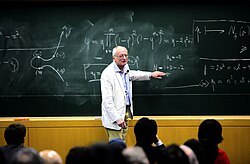

Jean-Pierre Serre | |
|---|---|
 Serre in 2003 | |
| Born | 15 September 1926 Bages, Pyrénées-Orientales, France |
| Alma mater | |
| Known for | (List of things named after Jean-Pierre Serre) |
| Spouse | Josiane Serre |
| Children | Claudine Monteil |
| Relatives | Denis Serre (nephew) |
| Awards |
|
| Scientific career | |
| Fields | Mathematics |
| Institutions | |
| Thesis | Homologie singulière des espaces fibrés (1951) |
| Henri Cartan | |
Doctoral students | |
Jean-Pierre Serre (French: [sɛʁ]; born 15 September 1926) is a French mathematician who has made contributions to algebraic topology, algebraic geometry and algebraic number theory. He was awarded the Fields Medal in 1954 and the inaugural Abel Prize in 2003.
Born in Bages, Pyrénées-Orientales, to pharmacist parents, Serre was educated at the Lycée de Nîmes. Then he studied at the École Normale Supérieure in Paris from 1945 to 1948.[1] He was awarded his doctorate from the Sorbonne in 1951. From 1948 to 1954 he held positions at the Centre National de la Recherche Scientifique in Paris. In 1956 he was elected professor at the Collège de France, a position he held until his retirement in 1994.
His wife, Professor Josiane Heulot-Serre, was a chemist; she also was the director of the Ecole Normale Supérieure de Jeunes Filles. Their daughter is the former French diplomat, historian and writer Claudine Monteil. The French mathematician Denis Serre is his nephew. He practices skiing, table tennis, and rock climbing (in Fontainebleau).
From a very young age, Serre was an outstanding figure in the school of Henri Cartan,[2] working on algebraic topology, several complex variables and then commutative algebra and algebraic geometry, where he introduced sheaf theory and homological algebra techniques. Serre's thesis concerned the Leray–Serre spectral sequence associated to a fibration. Together with Cartan, Serre established the technique of using Eilenberg–MacLane spaces for computing homotopy groups of spheres, which at that time was one of the major problems in topology.
In his speech at the Fields Medal award ceremony in 1954, Hermann Weyl gave high praise to Serre, and also made the point that the award was for the first time awarded to a non-analyst. Serre subsequently changed his research focus.
In the 1950s and 1960s, a fruitful collaboration between Serre and the two-years-younger Alexander Grothendieck led to important foundational work, much of it motivated by the Weil conjectures. Two major foundational papers by Serre were Faisceaux algébriques cohérents (FAC, 1955),[3] on coherent cohomology, and Géométrie algébrique et géométrie analytique (GAGA, 1956).[4]
Even at an early stage in his work Serre had perceived a need to construct more general and refined cohomology theories to tackle the Weil conjectures. The problem was that the cohomology of a coherent sheaf over a finite field could not capture as much topology as singular cohomology with integer coefficients. Amongst Serre's early candidate theories of 1954–55 was one based on Witt vector coefficients.
Around 1958, Serre suggested that isotrivial principal bundles on algebraic varieties—those that become trivial after pullback by a finite étale map—are important. This acted as one important source of inspiration for Grothendieck to develop étale topology and the corresponding theory of étale cohomology.[5] These tools, developed in full by Grothendieck and collaborators in Séminaire de géométrie algébrique (SGA) 4 and SGA 5, provided the tools for the eventual proof of the Weil conjectures by Pierre Deligne.

From 1959 onward Serre's interests turned towards group theory, number theory, in particular Galois representations and modular forms.
Amongst his most original contributions were: his "Conjecture II" (still open) on Galois cohomology; his use of group actions on trees (with Hyman Bass); the Borel–Serre compactification; results on the number of points of curves over finite fields; Galois representations in ℓ-adic cohomology and the proof that these representations have often a "large" image; the concept of p-adic modular form; and the Serre conjecture (now a theorem) on mod-p representations that made Fermat's Last Theorem a connected part of mainstream arithmetic geometry.
In his paper FAC,[3] Serre asked whether a finitely generated projective module over a polynomial ring is free. This question led to a great deal of activity in commutative algebra, and was finally answered in the affirmative by Daniel Quillen and Andrei Suslin independently in 1976. This result is now known as the Quillen–Suslin theorem.
In 1954, Serre, at the age of 27 in 1954, was and still is the youngest person ever to have been awarded the Fields Medal. He went on to win the Balzan Prize in 1985, the Steele Prize in 1995, the Wolf Prize in Mathematics in 2000, and was the first recipient of the Abel Prize in 2003. He has been awarded other prizes, such as the Gold Medal of the French National Scientific Research Centre (Centre National de la Recherche Scientifique, CNRS).
He is a foreign member of several scientific Academies (US, Norway, Sweden, Russia, the Royal Society, Royal Netherlands Academy of Arts and Sciences (1978),[6] American Academy of Arts and Sciences,[7] National Academy of Sciences,[8] the American Philosophical Society[9]) and has received many honorary degrees (from Cambridge, Oxford, Harvard, Oslo and others). In 2012 he became a fellow of the American Mathematical Society.[10]
Serre has been awarded the highest honors in France as Grand Cross of the Legion of Honour (Grand Croix de la Légion d'Honneur) and Grand Cross of the Legion of Merit (Grand Croix de l'Ordre National du Mérite).
A list of corrections, and updating, of these books can be found on his home page at Collège de France.
{kind=link}
{kind=link}